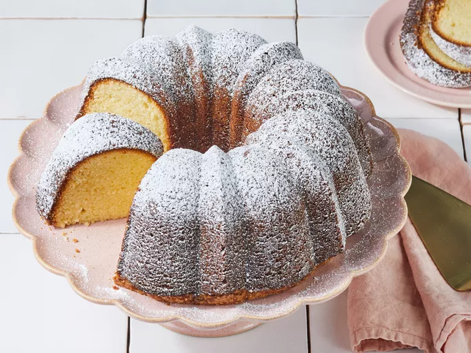

Home=
Sour Cream Pound Cake

A Delicious Bundt Cake
This sour cream pound cake is always a hit! Sour cream keeps it moist and vanilla adds a lovely flavor. Great for brunch or dust with confectioners sugar and serve with berries for dessert.
Ingredients.
- 375 g all-purpose flour
- 1/2 teaspoon salt
- 1/4 teaspoon baking soda
- 656 g white sugar
- 227 g unsalted butter, softened
- 6 large eggs
- 1 tablespoon vanilla extract
- 1/8 teaspoon ground mace or 1/4 teaspoon ground nutmeg
- 1 cup (250 mL) sour cream
- Icing sugar, as needed
Steps.
- Gather all ingredients. Preheat the oven to 175 degrees C (350 degrees F). Grease and flour a 10-inch fluted tube pan (such as a Bundt or angel food cake pan).
- Mix flour, salt, baking soda, and mace in a bowl; set aside.
- Beat sugar and butter with an electric mixer in a large bowl until light and fluffy, about 5 minutes.
- Add eggs, one at a time, beating well after each addition. Beat in vanilla.
- Add flour mixture to wet ingredients alternately with sour cream, mixing until just incorporated.
- Pour batter into the prepared pan; use the back of a spoon to smooth out the surface of the batter.
- Bake in the preheated oven until a toothpick inserted in the center comes out clean, about 1 hour and 25 minutes. Run a thin knife or offset spatula around the edge of the cake. Cool in the pan on a wire rack for 20 minutes, then invert onto a wire rack and cool completely.
- Dust with powdered sugar before serving.